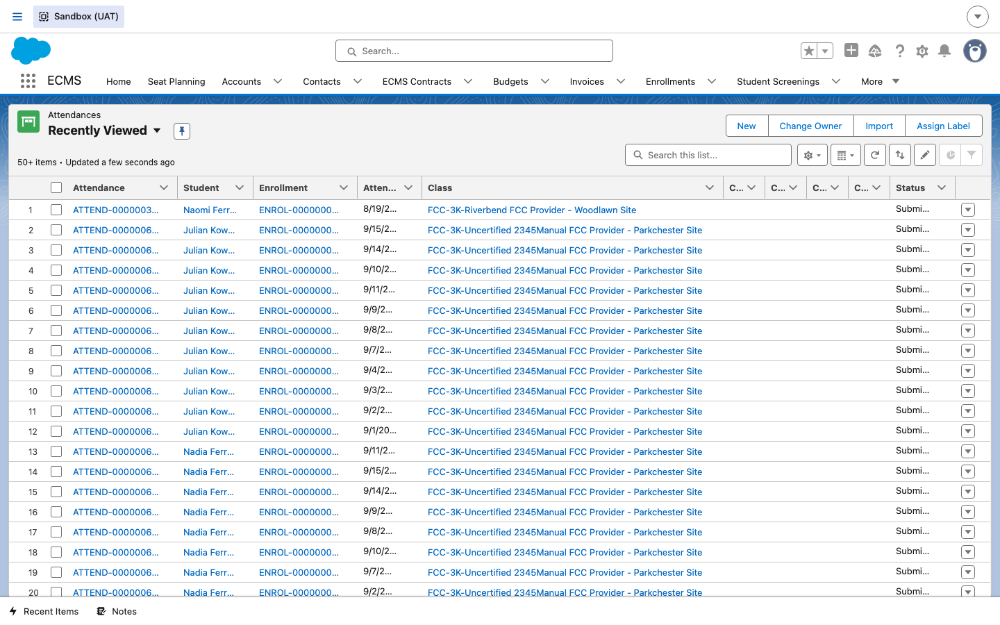
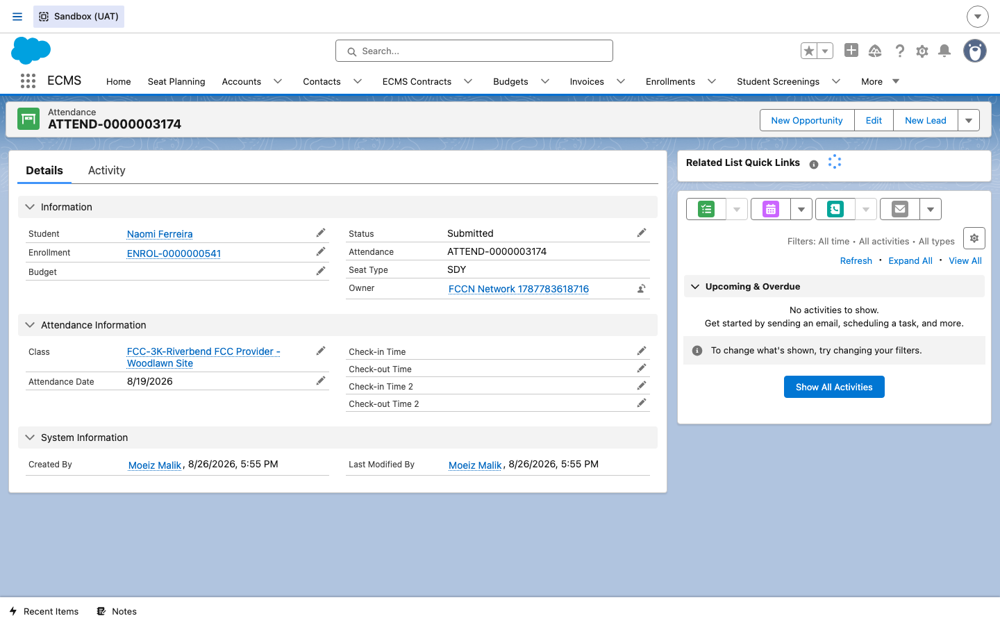
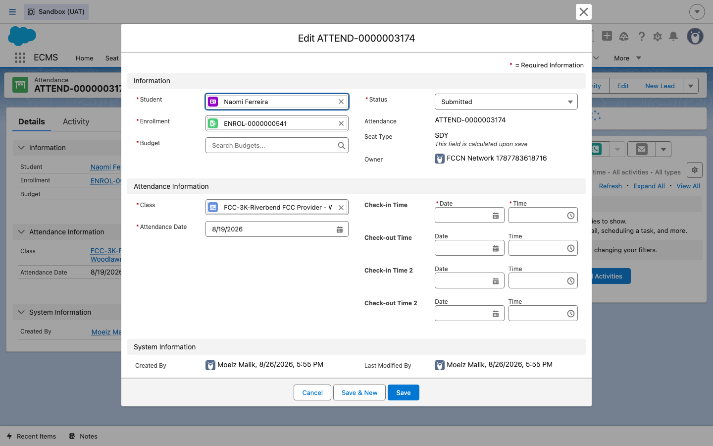
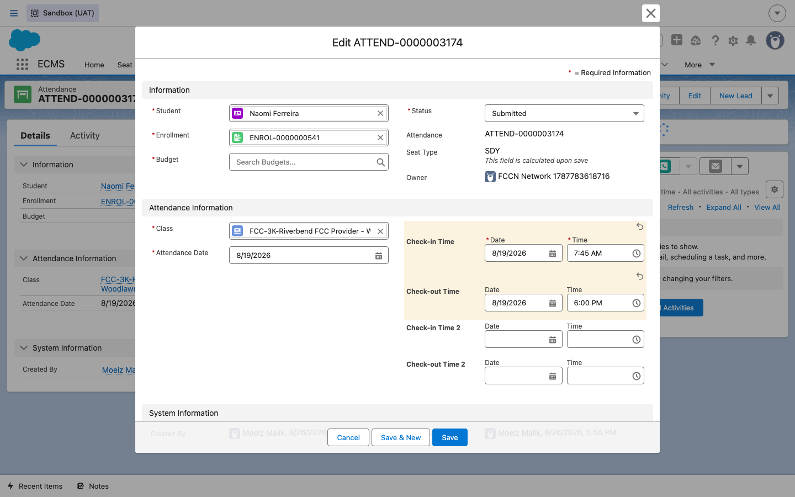
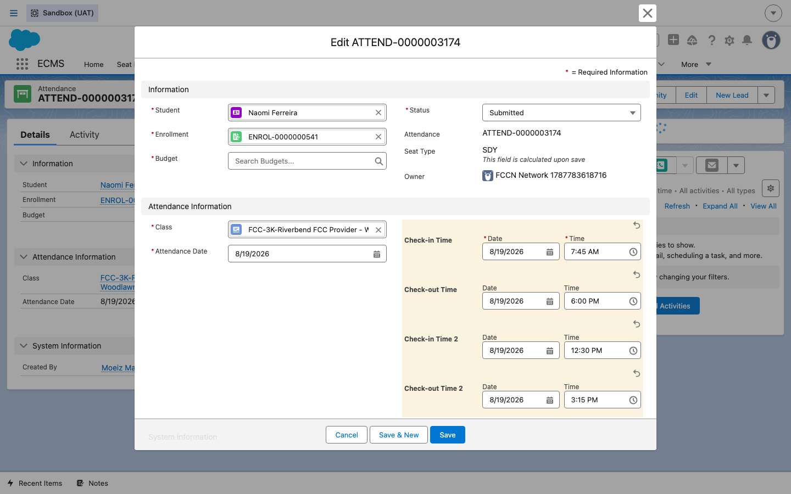
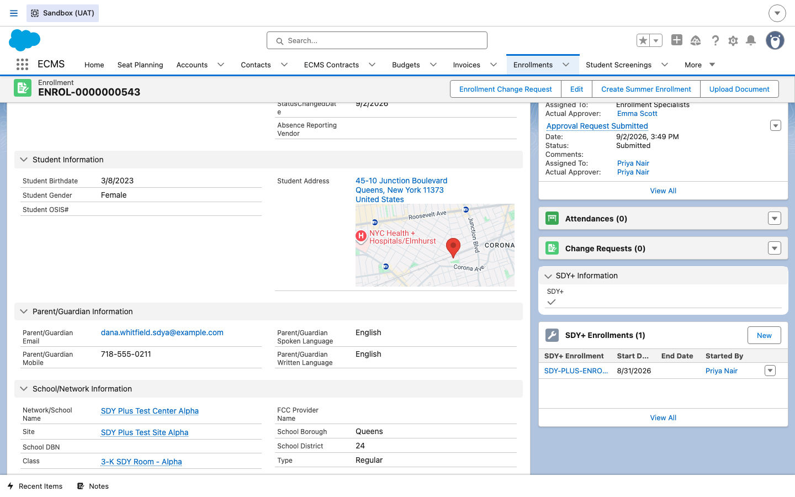
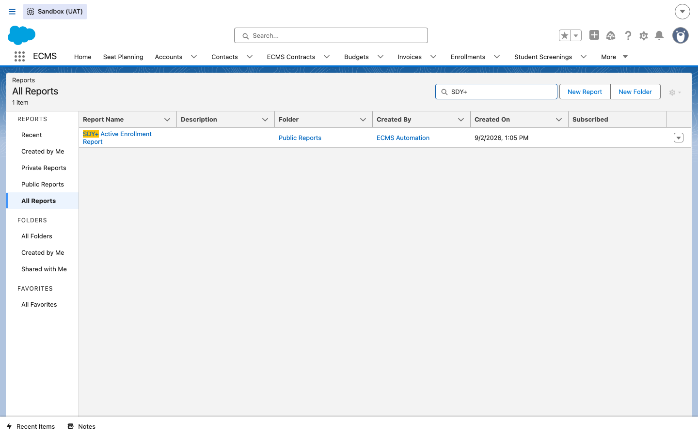
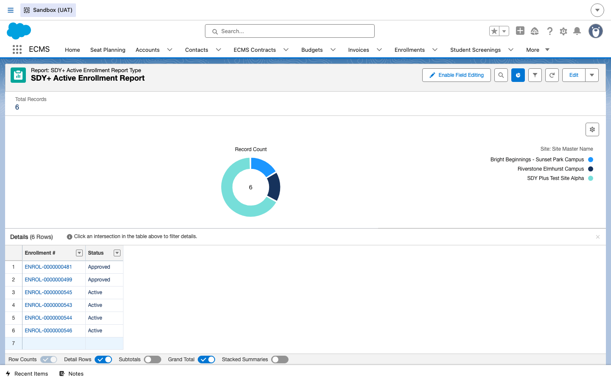
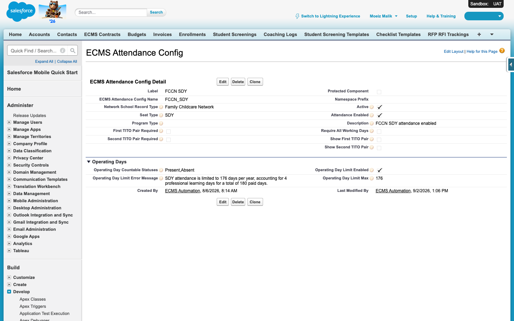

Attendance — FCCN / SDY (TITO)
How attendance works differently for extended-day seat types that use a clock-in / clock-out style record — called TITO (Time In / Time Out) — instead of a simple present/absent daily flag. This guide uses an FCCN / FCC Provider example, since extended-day seats are especially common on the Family Child Care side of ECMS.
Overview
Standard attendance in ECMS (covered in the companion Attendance (CBO) guide) is a simple
daily record: was the child present or absent on a given date, tied back to their Enrollment and Class.
TITO attendance adds an actual clock-in / clock-out record on top of that — a
Check-in Time and a Check-out Time (and, for children who leave and come back the same day, a second
Check-in/Check-out pair) — because certain seats are funded and billed based on the actual hours of
care provided, not just a day/absent flag. The ECMS_Attendance__c object always has the same
four time fields available (Check_In_Time__c, Check_Out_Time__c,
Check_in_Time_2__c, Check_out_Time_2__c); whether they're expected to be filled
in depends on the seat's type. This guide uses ECMS's real UAT example of a seat coded
SDY to illustrate the TITO fields, and is written from the FCCN / FCC Provider side,
where an Attendance Taker at the Provider (or their FCCN oversight staff) records daily
attendance for the children in that home-based program.
Seat_Type__c = "SDY", and every TITO field is exposed on
them. Rather than assert a firm claim that conflicts with the glossary, this guide describes the
behavior generically as applying to extended-day seat types — if you're unsure
whether a specific seat type requires TITO, check with Portfolio or an Operations Analyst.
Steps
1Open the Attendance list for the Provider
DO Click the Attendances object tab (or, from the Enrollment or Site Master record, the Attendance related list) to see the daily attendance records tied to Riverbend FCC Provider – Woodlawn Site, part of the Riverbend Family Childcare Network FCCN.
RESULT The Attendances list view loads, showing one row per student per day, each linked to its Enrollment and Class (the FCC Provider site).

2Open a SDY attendance record
DO Click into ATTEND-0000003174, the 8/19/2026 attendance record for Naomi Ferreira's enrollment at Riverbend FCC Provider – Woodlawn Site.
RESULT The record detail page loads. Alongside the standard Status, Student, Enrollment, and Class fields, an Attendance Information section shows Seat Type: SDY and four time fields — Check-in Time, Check-out Time, Check-in Time 2, and Check-out Time 2 — all currently blank on this record.

3Open the record for editing
DO Click Edit on the record.
RESULT The edit form opens with the same four time fields laid out as Date + Time pairs under Check-in Time, Check-out Time, Check-in Time 2, and Check-out Time 2. Notice Seat Type is shown as read-only with the note "This field is calculated upon save" — it isn't something the Attendance Taker sets directly; it's derived from the underlying seat/enrollment.

4Enter the Check-in and Check-out time
DO Enter the date and time the child actually arrived under Check-in Time (for example, 8/19/2026 at 7:45 AM), and the date and time they were picked up under Check-out Time (for example, 8/19/2026 at 6:00 PM).
RESULT The two fields now show the entered date/time pairs.

5Enter a second pair for a split session
DO If a child leaves partway through the day and returns later (a split session — for example, leaving for a medical appointment and coming back), also fill in Check-in Time 2 and Check-out Time 2 with that second arrival/departure.
RESULT All four time fields are populated: one Check-in/Check-out pair for the morning block, a second pair for the afternoon block.

6Decide whether to save
DO In real use, click Save once the actual check-in/check-out times for the day have been entered correctly. (For this guide, the form was cancelled, not saved — see the note in Step 4.)
RESULT Saving recalculates Seat Type and commits the times to the record, the same way any other field edit on Attendance is saved.
7Submit and certify, same as standard attendance
DO Submit and certify the day's attendance the same way you would for a standard (non-TITO) record — the Status field (Draft → Submitted → Certified) and the certification step work identically regardless of seat type.
RESULT The record's Status advances exactly as it would for a standard CBO attendance record. TITO doesn't introduce a separate approval chain — it only adds the check-in/check-out data captured on the record before that status moves forward.
8Understand why TITO feeds billing differently
DO Keep in mind, when entering or reviewing TITO attendance, that these times are not just informational — they exist because extended-day seats are funded and billed based on actual hours of care provided, not a flat daily rate.
RESULT Downstream, certified attendance (present/absent for standard seats, or check-in/check-out for extended-day seats) is what the CBO/FCCN's monthly Invoice relies on. For extended-day/SDY seats, an incomplete or missing Check-in/Check-out pair can be the difference between an invoice correctly reflecting the hours a child was actually cared for and one that understates it.
9Check the SDY+ indicator on an Enrollment
DO Open a live SDY-seat Enrollment record and look for an SDY+ Information section — for example ENROL-0000000543 (an Active enrollment at SDY Plus Test Site Alpha).
RESULT The record shows a checked SDY+ indicator,
plus a related SDY+ Enrollments list containing a child SDY+ Enrollment
record (SDY-PLUS-ENROL-...) that tracks its own Start Date and who started it. This is the
SDY_Plus__c Boolean field on ECMS_Enrollment__c described by the BRD, plus a
related tracking record for the Start/End Date history the BRD calls for.

SDY_Plus__c = true as well, for example
ENROL-0000000064 and ENROL-0000000264 (both Draft status) —
confirmed via node scripts/audit-uat-soql.js against ECMS_Enrollment__c.
10Run the SDY+ Active Enrollment Report
DO From the app's Reports tab, search
All Reports for SDY+.
RESULT A report literally titled SDY+ Active Enrollment Report is returned, living in the Public Reports folder.

DO Open the report.
RESULT It returns only Approved or
Active enrollments, grouped by Site, with Enrollment # and Status columns — six
rows in this UAT org at the time of writing, matching the enrollments with SDY_Plus__c = true
seen in Step 9.

11Watch for the infant-to-toddler age validation alert
DO Per DOEECMS-2191 (Age Validation Alert for Infant-to-Toddler Transition), be aware that when attendance is taken for a student who is past their 1st birthday (CBO/GFDC) or 2nd birthday (FCC) while still assigned to an infant seat/program, the BRD calls for the system to evaluate the child's age and class assignment at the point of attendance entry.
RESULT Per the BRD's acceptance criteria, this should display a non-blocking warning alert (banner, inline warning, or modal) stating the student is past the relevant birthday and should be moved to a toddler seat/program via an Enrollment Change Request. No alert is expected if the student is under or exactly one year old. Age is meant to be calculated using the facility's local time zone.
12Understand the 176-day SDY attendance limit
DO Know that for FCCN users on SDY seats, ECMS enforces a cap on total attendance days per enrollment year. This isn't only described in the BRD text — the live UAT org has it configured today, in Setup → Custom Metadata Types → ECMS Attendance Config, on the FCCN SDY record.
RESULT The config record shows Operating Day Limit Enabled checked, an Operating Day Limit Max of 176, and an Operating Day Limit Error Message reading exactly: “SDY attendance is limited to 176 days per year, accounting for 4 professional learning days for a total of 180 paid days.”

Operating_Attendance_Days_Completed__c, referenced in Jira comments), not the actual
error banner a user sees when Saving the 177th day — that in-the-moment validation banner was
not independently reproduced for this guide.
13Understand the monthly certification reminder
DO Per DOEECMS-2346, know that after the 1st of each month, FCCN and CBO users with attendance still awaiting certification for a prior month receive a reminder, and that reminder repeats weekly (every 7th day) until certification is complete. Per the Jira comments, the reminder scope was broadened beyond SDY-only: for CBOs it covers all enrollments' attendance, and for FCCNs it covers SDY attendance from ECMS plus EDY attendance status imported from CAPS Online (DOEECMS-2391).
RESULT If you (as an FCCN Network Director/Education Director, or a CBO Executive/Education/Fiscal Director with an active Salesforce user) attempt to certify a month before all of that month's enrollments and attendance days are complete, the system blocks certification and shows a message indicating all enrollments and days must be completed first — this completeness check is existing system functionality already implemented for CBO users.
14FCCN Calendar Management (brief note)
The underlying ECMS_Calendar__c object exists in the live UAT org (confirmed via SOQL),
but no calendar records were present in UAT at the time of writing, and a full calendar-submission
walkthrough is out of scope for this Attendance guide. This step exists only to
establish that the capability is built and where it fits, not to document its own workflow end to end.